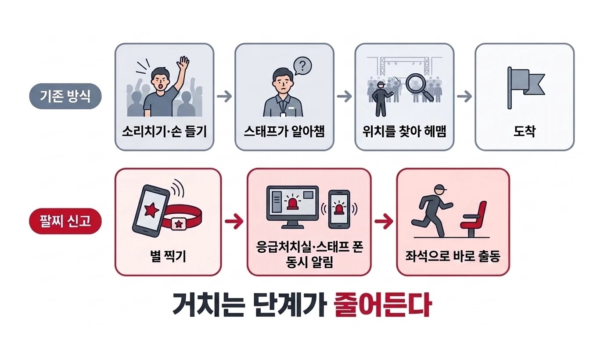

옆사람이 팔찌를 찍으면, 2분 안에 스태프가 온다
관객이 쓰러지면 주변이 소리쳐야 스태프가 안다
관객 2명·스태프 1명에게 직접 들었다: "카톡뿐", "위치를 모른다"
옆사람이 팔찌의 별을 찍으면 응급처치실 안 화면과 스태프 폰에 위치가 간다
별(NFC)과 QR이 한 팔찌에 — 어떤 폰으로도 찍힌다
찍는 순간 응급처치실과 스태프 폰에 동시에 간다
신고된 좌석·구역으로 스태프가 통로를 따라 바로 간다
